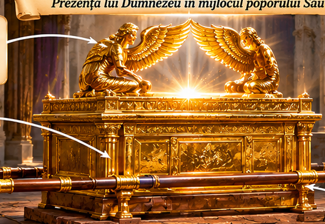
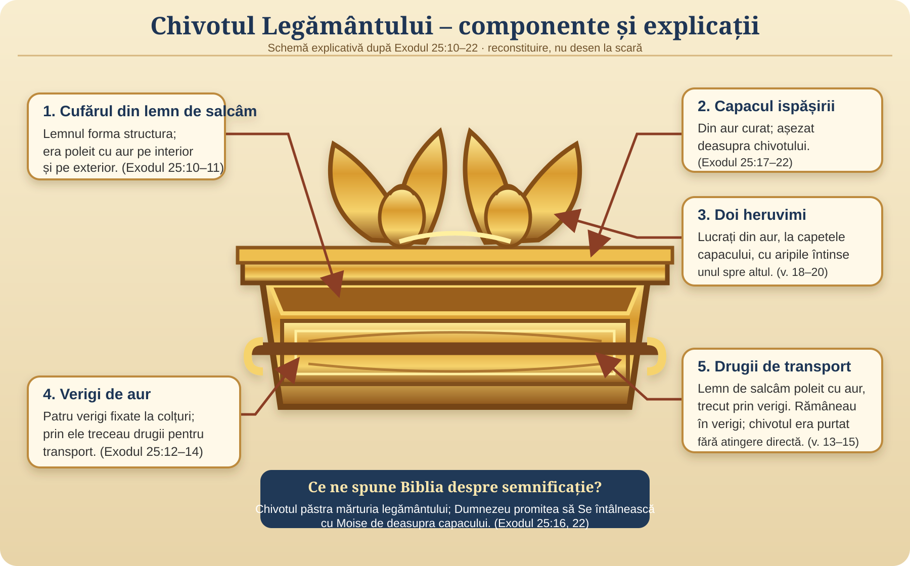
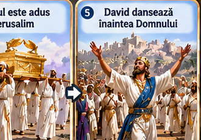
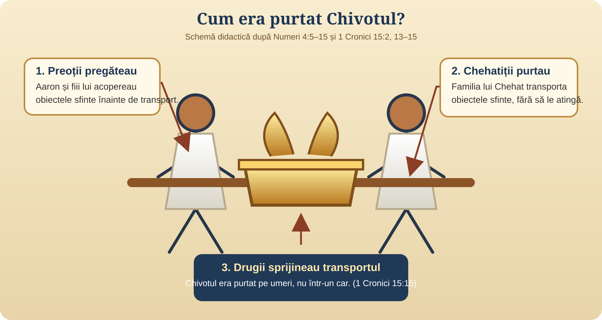
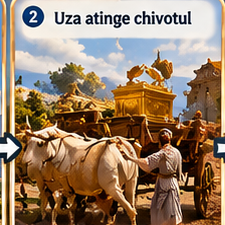
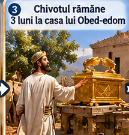
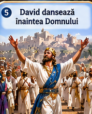

Vom privi Chivotul ca pe un obiect real din lumea Israelului antic, vom înțelege regulile pentru transportarea lui și vom urmări evenimentele în ordinea relatării biblice.
01 · Cercetează
Forma, materialele și semnificația Chivotului.
02 · Urmărește
Drumul de la Chiriat-Iearim la Ierusalim și oprirea de la Obed-Edom.
03 · Înțelege
De ce a contat ascultarea și cum s-a schimbat a doua procesiune.
Un detaliu important: Biblia nu oferă un jurnal complet al drumului, cu fiecare oprire și fiecare kilometru. În lecție vom deosebi locurile menționate în text de traseul orientativ desenat pentru a ne imagina regiunea.
Misiunea 1 · Obiectul sfânt
Cum arăta Chivotul Legământului?
Instrucțiunile din Exodul 25 descriu un cufăr din lemn de salcâm, acoperit cu aur, prevăzut cu verigi și drugi pentru transport.

Reconstituire artistică modernă, nu fotografie și nu obiect arheologic.
01
Chivotul – cufărul
Lemn de salcâm, poleit cu aur pe dinăuntru și pe dinafară. Dimensiuni: 2,5 × 1,5 × 1,5 coți (Exodul 25:10–11).
02
Capacul ispășirii
Capac din aur curat, așezat deasupra chivotului. Termenul ebraic este asociat cu ispășirea; Dumnezeu vorbea cu Moise de deasupra lui (Exodul 25:17–22).
03
Cei doi heruvimi
Lucrați din aur, la capetele capacului, cu aripile întinse. Imaginea subliniază caracterul sfânt al locului întâlnirii cu Dumnezeu; nu sunt simple decorațiuni (Exodul 25:18–20).
04
Verigile și drugii
Patru verigi și drugi din lemn de salcâm poleiți cu aur. Drugii rămâneau în verigi; chivotul nu trebuia apucat direct (Exodul 25:12–15).
Privește componentele cu săgeți explicative
Apasă pe diagramă pentru a o deschide mare. Fiecare săgeată indică piesa descrisă în Exodul 25.

Diagramă explicativă după Exodul 25:10–22. Desen schematic, nu reconstituire arheologică.
Dimensiuni: un cot antic este estimat adesea la aproximativ 45 cm, dar măsura varia. De aceea, conversia în centimetri este orientativă, nu exactă.
Ce se afla în Chivot?
Tablele legământului
Plăcile mărturiei, așezate în chivot (Exodul 25:16; Deuteronomul 10:1–5).
Vasul cu mană
Exodul 16:33–34 spune că vasul cu mană a fost păstrat înaintea mărturiei. Evrei 9:4 îl asociază cu chivotul.
Toiagul lui Aaron
Toiagul care înmugurise a fost păstrat înaintea mărturiei (Numeri 17:10); Evrei 9:4 îl menționează în descrierea obiectelor asociate chivotului.
Atenție la ilustrații: masa cu pâinile pentru punerea înainte nu era parte din Chivot. Era un obiect separat al Cortului întâlnirii, aflat în Locul Sfânt (Exodul 25:23–30). Vasul cu mană nu trebuie confundat cu această masă.
Misiunea 2 · Semnificația
De ce a ales Dumnezeu Chivotul?
Chivotul nu era un idol și nici un obiect magic. Dumnezeu l-a rânduit ca semn vizibil al legământului Său cu Israel și al prezenței Sale în mijlocul poporului.
Un semn al legământului
Tablele aminteau cuvintele legământului și responsabilitatea poporului de a asculta.
Un loc al întâlnirii
Dumnezeu i-a spus lui Moise că Se va întâlni cu el de deasupra capacului ispășirii (Exodul 25:22).
Un semn al sfințeniei
Chivotul era pus deoparte pentru slujirea sfântă. Nu putea fi tratat ca un obiect obișnuit.
O chemare la încredere și ascultare
Prezența lui Dumnezeu nu putea fi folosită pentru a garanta succesul unei acțiuni omenești.
Imagine simbolică a chivotului și a capacului cu heruvimi.
Întrebare pentru copii: Care este diferența dintre a respecta un obiect sfânt și a crede că obiectul are putere magică?
Misiunea 3 · Cine îl putea purta?
Leviții: slujitori puși deoparte

Reconstituire artistică a unei procesiuni; hainele și chipurile sunt interpretări moderne.
Leviții proveneau din seminția lui Levi și aveau responsabilități speciale legate de Cortul întâlnirii. Familia lui Chehat avea grijă de obiectele foarte sfinte.
1. Obiectele erau pregătite
Aaron și fiii lui acopereau obiectele sfinte înainte ca acestea să fie transportate (Numeri 4:5–15).
2. Chehatiții le purtau
Ei nu trebuiau să atingă obiectele sfinte direct, ca să nu moară (Numeri 4:15). Chivotul era purtat cu drugii.
3. Purtarea pe umeri
David a recunoscut că rânduiala nu fusese respectată la prima încercare. A doua oară, leviții au purtat chivotul pe umeri, cu drugii (1 Cronici 15:2, 13–15).
Urmărește cine făcea fiecare lucrare
Săgețile arată diferența dintre pregătirea obiectului și transportarea lui.

Schemă didactică după Numeri 4:5–15 și 1 Cronici 15:2, 13–15. Îmbrăcămintea este simbolică.
Nu toți leviții aveau exact aceeași sarcină. Preoții aveau responsabilitatea pregătirii obiectelor sfinte; chehatiții le transportau după ce erau acoperite. Pentru procesiunea din vremea lui David, vezi 1 Cronici 15.
De ce nu era suficient un car nou?
Prima încercare
Car nou, boi și grabă
David a organizat transportul într-un car nou, după un mod care nu respecta rânduiala dată pentru purtarea obiectelor sfinte.
2 Samuel 6:3–7
A doua încercare
Leviți, drugi și ascultare
David a pregătit slujitorii și a urmat rânduiala: leviții au purtat chivotul pe umeri.
1 Cronici 15:11–15
Misiunea 4 · Orientare pe teren
De la Chiriat-Iearim la Ierusalim
Punctul de plecare menționat este Baale-Iuda, identificat în relatare cu Chiriat-Iearim. Destinația este Ierusalimul, cetatea lui David.
Hartă orientativă · zona muntoasă a Iudeiischemă geografică, nu hartă topografică exactă
Locuri menționate în relatare Legătură orientativă, nu traseu antic documentat
Chiriat-Iearim
Chivotul fusese adus acolo și a rămas în casa lui Abinadab. (1 Samuel 7:1–2)
Casa lui Obed-Edom
Chivotul a fost dus acolo după oprirea primei procesiuni și a rămas trei luni. Biblia nu identifică sigur locul exact al casei pe hartă. (2 Samuel 6:10–11)
Ierusalim
David a adus Chivotul în cetate și l-a așezat în cortul pregătit pentru el. (2 Samuel 6:12–17)
Ce nu știm: Biblia nu descrie fiecare drum, sat sau kilometru. Locul exact al ariei lui Nacon/Chidon și poziția casei lui Obed-Edom nu pot fi marcate cu certitudine. De aceea, harta nu inventează opriri precum Gabaon sau Geba și nu pretinde că arată ruta exactă.
Misiunea 5 · Oprirea neașteptată
Prima încercare: ce s-a întâmplat?

Scenă reconstituită artistic; Biblia menționează un car nou și boi.
David adună oamenii. El pornește să aducă Chivotul din Baale-Iuda. (2 Samuel 6:1–2)
Chivotul este pus într-un car nou. Uza și Ahio, fiii lui Abinadab, conduc carul. (v. 3–4)
Boii se poticnesc. Uza întinde mâna spre Chivot și îl apucă. (v. 6)
Urmează o tragedie. Uza moare acolo, iar David se mânie și apoi se teme de Domnul. (v. 7–9)
Cum explicăm copiilor? Textul biblic prezintă un eveniment grav. Nu îl transformăm într-o scenă de groază și nu pretindem că știm toate gândurile lui Uza. Explicăm că Dumnezeu dăduse instrucțiuni clare pentru obiectele sfinte, iar intențiile omenești nu înlocuiesc ascultarea.
Verifică ce ai înțeles
În ce a fost pus Chivotul la prima încercare?
Alege un răspuns.
Misiunea 6 · Trei luni
Casa lui Obed-Edom

Imagine orientativă a unei locuințe din regiune, nu casa identificată istoric a lui Obed-Edom.
David nu a dus Chivotul mai departe la Ierusalim în acea zi. L-a dus în casa lui Obed-Edom, numit gatitul.
3 luni
Chivotul a rămas acolo trei luni, iar Domnul a binecuvântat casa lui Obed-Edom și tot ce avea. (2 Samuel 6:10–11)
Vestea a ajuns la David. Când a auzit că Domnul binecuvântase casa lui Obed-Edom, a pornit din nou să aducă Chivotul. (v. 12)
De reținut: Textul nu spune că binecuvântarea a fost o plată pentru găzduirea Chivotului. Relatarea subliniază că prezența Domnului a fost prilej de binecuvântare pentru casa lui Obed-Edom.
Cât timp a rămas Chivotul în casa lui Obed-Edom?
Alege un răspuns.
Misiunea 7 · A doua procesiune
De data aceasta, după rânduiala Domnului
Reconstituire artistică inspirată de 1 Cronici 15.
David a înțeles că prima încercare nu respectase rânduiala. De data aceasta, a pregătit locul, a chemat preoții și leviții și le-a cerut să se sfințească.
Pregătire: David recunoaște că Chivotul nu fusese purtat după rânduială. (1 Cronici 15:11–13)
Purtare: Leviții poartă Chivotul pe umeri, cu drugii, așa cum poruncise Moise. (15:14–15)
Închinare: Cântăreții și instrumentiștii participă la procesiune. (15:16–24)
Bucurie: David și tot Israelul aduc Chivotul cu strigăte și sunet de trâmbițe. (2 Samuel 6:12–15)
Un detaliu din text: 2 Samuel 6:13 spune că, după ce purtătorii Chivotului făcuseră șase pași, David a adus jertfe. Relatarea din 1 Cronici 15 completează tabloul cu organizarea leviților și a cântăreților.
Ce se auzea în procesiune?
🎺 Trâmbițechemare și sărbătoare
🎻 Instrumente cu coardecântare și laudă
🥁 Țimbaleritm puternic
🙌 Strigăte de bucuriepoporul Îl laudă pe Domnul
Misiunea 8 · Sosirea
Chivotul ajunge în cetatea lui David

Reconstituire artistică a bucuriei lui David.
Chivotul a fost adus în Ierusalim și așezat în cortul pe care David îl pregătise. Au fost aduse arderi-de-tot și jertfe de mulțumire.
David a binecuvântat poporul în Numele Domnului și a împărțit hrană oamenilor. (2 Samuel 6:17–19)
Mai târziu, 1 Cronici 16 descrie rânduirea slujitorilor și cântarea de mulțumire înaintea Chivotului.
VERSetul DE REȚINUT
„David juca din răsputeri înaintea Domnului...”
2 Samuel 6:14
Ce învățăm din întreaga poveste?
Sfințenie
Dumnezeu nu este obișnuit și nu trebuie tratat cu nepăsare.
Ascultare
O intenție bună nu înlocuiește urmarea Cuvântului lui Dumnezeu.
Bucurie
Închinarea poate fi plină de recunoștință, cântare și bucurie sinceră.
Misiunea 9 · Ai devenit explorator!
Provocarea cunoștințelor
Răspunde la întrebări și vezi câte puncte adună echipa ta.
Echipa 10
Echipa 20
Echipa 30
Echipa 40
Întrebarea 1 / 7
Unde se afla Chivotul înainte ca David să-l aducă?
Alege un răspuns.
🎭 Împărțiți rolurile pentru scenetă
Scrieți numele copiilor, separate prin virgulă.
Încheiere: Ce poți face săptămâna aceasta pentru a-L onora pe Dumnezeu prin ascultare, respect și bucurie?